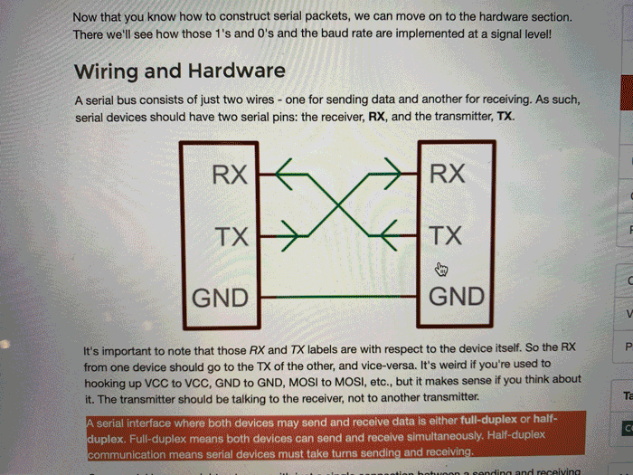
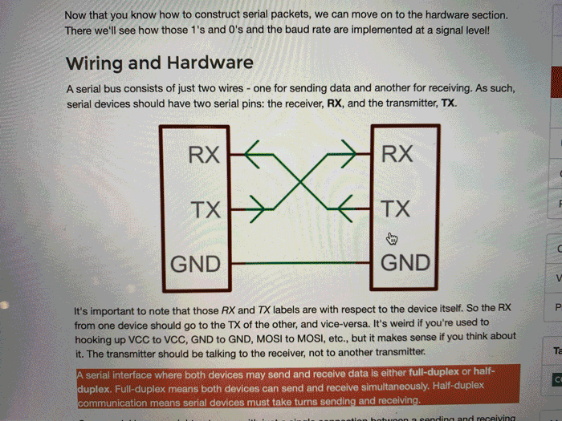

🗓 30 March 2022
Things to keep in mind when choosing a network:
Assignment:
Paula and I got together to make a serial communication with two ESP 32 boards and some wires. We started with a simple example of an UART connection (using TX and RX pins) to make a connection between our boards, which we could control from our Arduino serial ports. Connecting the boards was pretty straight forward. Using a fes wires with female ends, we connected the TX to the RX of the other board and the ground to ground. Then we con

Network & Communications
In this class we learned about networks and protocols and their functions. A network is a group of computers connected among themselves through communication lines. A protocol is the set of rules that specify message formatsand procedures that allow machines and programs to exchange information. Networks and protocols are used for different reasons: when we can't use the same hardware, we want to do serveral things at the same time, to develop modules, and avoid interference between systems.Things to keep in mind when choosing a network:
- Power consumption
- Range
- Bandwidth
- Existing networks? or adhoc?
- Mobility
Assignment:
Paula and I got together to make a serial communication with two ESP 32 boards and some wires. We started with a simple example of an UART connection (using TX and RX pins) to make a connection between our boards, which we could control from our Arduino serial ports. Connecting the boards was pretty straight forward. Using a fes wires with female ends, we connected the TX to the RX of the other board and the ground to ground. Then we con
